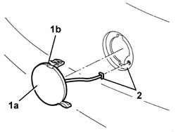

7055B26 COVER (ONE) ON BUMPERS - R+R
- Path
- Procedures > 70 FITTINGS > 7055 MOULDINGS ON PROTECTIONS > 7055B EXTERIOR PROTECTIONS > 7055B26 COVER (ONE) ON BUMPERS - R+R
- Kind
- repair procedure (removal / refitting; the operation number is the code)
- Applies to
- all engines; all production periods
- Interactive page
- https://sloeber94.github.io/elrnDB-aGt/en/#/125001971
Applies to: all engines; all production periods
 Removing
Removing
 Refitting
Refitting1. Remove the cover (1a) using a thin flat screwdriver inserted in the relevant slot (1b).
2. Disengage the retainer from the hole and save the cover.

Applies to: all engines; all production periods
Refitting
RemovingCheck that the lid is undamaged.
Fit the retainer in the hole.
Fit the cover in its seating.